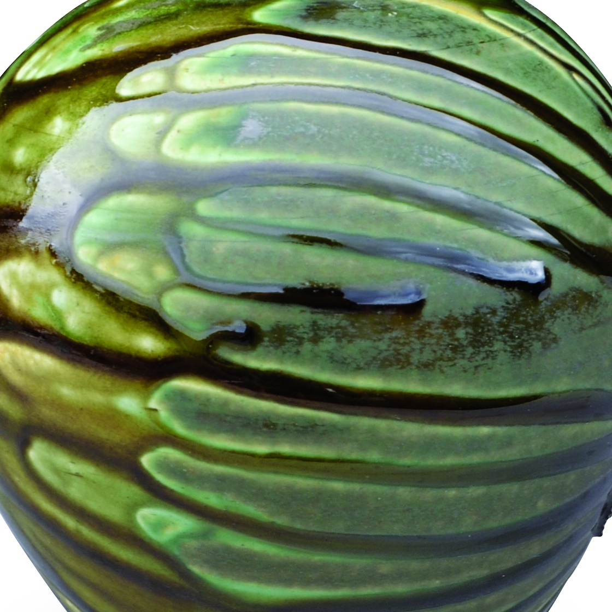

Recipe
Ashleighs Rivulet
An iron- and titanium-bearing rivulet glaze that creates downward ash-like streaking and movement when layered over a matte base.
Cone 6
wood-fired, ash-run, streaking
Researched
Process
Application: Use over Green Dragon Matte. The published piece also paired it with Frasca Ash.
Notes: Hall-Hough treated it as part of a layered runny surface stack and fired the work on shells and wadding over a drip tray.
Fit: Runs in combination. Protect shelves and test thickness.
Context
Surface tags: rivulet, iron, titanium, runny, layered
Clay bodies: Not captured
Sources: can-ashleighs-rivulet

Ingredients
| Material | % | Role |
|---|---|---|
| Dolomite | 13.6 | flux |
| Strontium Carbonate | 13.6 | flux |
| Whiting | 27.3 | flux |
| Ferro Frit 3134 | 9.1 | flux |
| Ball Clay | 27.3 | suspension |
| Silica | 9.1 | glass former |
| Bentonite | 2.0 | suspension |
| Red Iron Oxide | 10.0 | colorant |
| Titanium Dioxide | 5.0 | opacifier and crystallization response |
Cone-6-Electric
Kiln: electric
Atmosphere: oxidation
Schedule: Cone 6 oxidation/neutral.
Cooling: Not captured.
Hold: 0
Notes
This recipe reads less like a static glaze and more like a movement layer.
- It is a strong option when the goal is gravity-driven streaking rather than broad pooled ash melts.
- The iron and titanium combination should make cooling effects worth testing, even though the published source does not specify a programmed cool.
- Pairing it with Frasca Ash over a matte base appears to be one of the richest electric faux wood-fire combinations in this cluster.